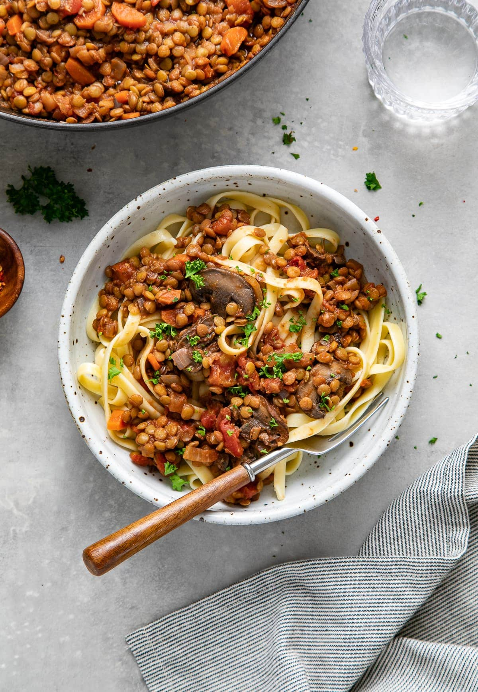

Mushroom and Lentil Ragu

Description
Preparation time: 10 minutes
Cooking time: 45 minutes
Serves: Serves 6
This vegan Hearty Mushroom and Lentil Ragu with pasta recipe is comforting and warm while filling all your senses. It's the perfect hearty meal!
The aroma alone smells delicious and once you take your first bite, you'll be hooked. I had seconds and thirds. Seriously!
Ingredients
- 1 tbsp olive oil
- 1 small onion
- 2 cloves garlic
- 2 large carrots
- 250g chestnut mushrooms
- 1 tbsp oregano
- 1 1/2 cups dried red split lentils
- 400g tin chopped tomates
- 2 cups vegetable broth
- 1/2 cup red wine
- 3 tbsp tomato paste
- 500g tagliatelle pasta
Steps
- In a large dutch oven/pot, heat oil or water over medium heat, add onions and saute for 5 minutes.
- Add garlic, carrots, mushrooms, red pepper flakes and oregano, saute for 4 minutes, or until mushrooms begin to soften.
- Add lentils, tomatoes, vegetable broth and wine, bring to a boil, cover, reduce heat to low and simmer for 30-40 minutes, until lentils are tender. Add more water/broth or wine as needed.
- Cook the pasta according to the package directions.
- Serve ragu over pasta. Top with a light dusting of a dairy-free cheese of your choosing